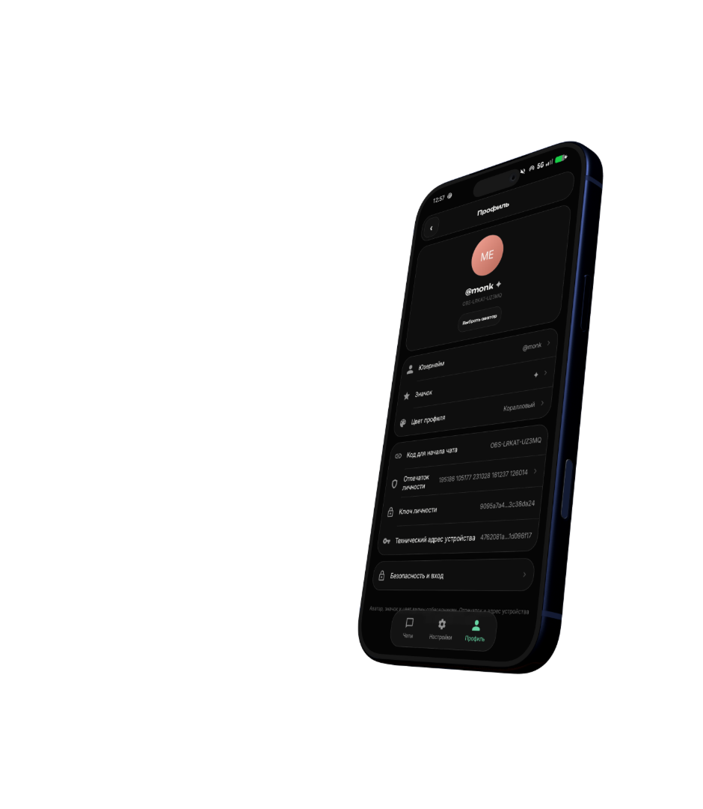

Выберите диалог
Добавьте устройство по его адресу или откройте существующую переписку.
Защищаем локальное хранилище…
Пароль при запуске
Ключ базы зашифрован этим паролем. Он нигде не хранится, поэтому подобрать его не у кого — и восстановить тоже: забыли пароль, останется только завести базу заново.
Однократное обновление
Введите прежний пароль один раз. Windows зашифрует его через DPAPI, и следующие входы станут автоматическими.
Старая база будет убрана в резервную папку, а новая откроется автоматически.
Recovery phrase · сохраните её сейчас
Двадцать четыре слова — это и есть ваш аккаунт. По ним его вернут на любом устройстве. Перепишите на бумагу и держите там, где не держите компьютер. В переписку, скриншот и облако — нельзя.
Valanium is a private messenger with reliable end-to-end encryption.
Messages are encrypted on your device. Relay and Tor keep the main server out of sight.
Privacy by design. Open source. No phone number required.

Выберите, как приложение будет соединяться с сетью. Настройку всегда можно изменить позже.
Аккаунт без логина и пароля. Для восстановления сохраните сид-фразу из 24 слов.
Введите 24 слова в том же порядке. За один шаг показываются восемь слов.
——Сверьте код лично или по другому доверенному каналу. При смене ключа нужна новая проверка.
Сверьте числа с собеседником по другому каналу.
Открытый канал: посты хранятся на сервере без шифрования и видны всем, кто знает имя. Личная переписка так не работает — она шифруется на устройстве.
Добавьте устройство по его адресу или откройте существующую переписку.
Что о вас знают собеседники и чем вы подтверждаете, что это вы.
Аватар и публичные данные профиля. Пока доступ к аватару ограничен, ключ получают только выбранные вами люди, а на сервере хранится зашифрованный блок.
—У каждого правила есть базовый круг и именные исключения. Сначала действует явный запрет, затем явное разрешение, и только потом круг.
Tor и сообщения от одобренных контактов. Без статуса в сети, отметок прочтения, набора текста и превью ссылок.
Разрешающие исключения сбрасываются, запреты сохраняются. Правила сохраняются без сети и синхронизируются при подключении.Tor выбран по умолчанию. Auto доступен по вашему выбору.
Подключение подготавливается
Оформление интерфейса. Хранится только на этом устройстве.
Как ведёт себя переписка. Всё это хранится на устройстве и на сервер не уходит.
Открыто потому, что сервер признал ключ этой личности своим владельцем.
Что лежит на этом устройстве и что с этим можно сделать.
Проверяем обновления…
—
Пароль не восстанавливается. Забыли — базу придётся заводить заново, переписка на этом устройстве пропадёт.
—
Этот файл — весь ваш аккаунт: ключи личности и устройства, состояние шифрования и вся переписка целиком. Кто получит файл и пароль к нему, тот сможет читать вашу переписку и писать от вашего имени. Это не резервная копия для облака и не то, что отправляют себе в мессенджер.
Файл запечатан отдельным паролем — не паролем этого устройства. Передавать файл и пароль одним каналом нельзя.—
После переезда со старого устройства писать нельзя: ключ устройства станет общим, а состояние шифрования у каждой копии своё — эпохи разойдутся, и часть сообщений перестанет открываться.Профиль
—
—
Исключения
Перед отправкой